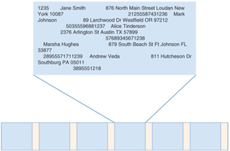
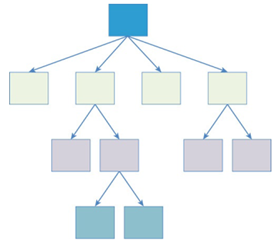
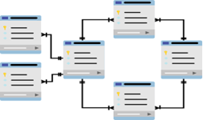
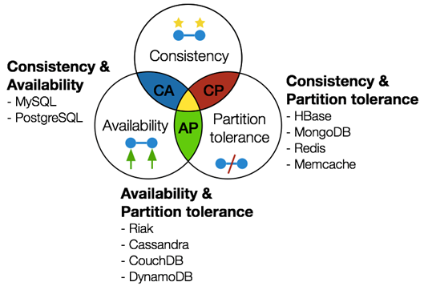

Introducción
Historia de las Bases de Datos.
Desde la aparición de los sistemas informáticos, una de sus principales aplicaciones ha sido el almacenamiento y el tratamiento de grandes cantidades de datos para permitir la consulta y la utilización posteriores. Una base de datos, formada por una colección de datos entre las que se establece una relación, es una de las herramientas más utilizadas a la hora de trabajar con grandes volúmenes de información. Los sistemas de gestión de datos han evolucionado desde las fichas o tarjetas rectangulares, que inicialmente surgieron para guardar la información, por ejemplo, de los datos de los libros de una biblioteca.
La aparición de los ordenadores, los soportes electrónicos y, especialmente, los ficheros de datos en formato digital cambiaron radicalmente la situación. En los sistemas de gestión de datos basados en ficheros, la información se almacena en ficheros planos diseñados para una aplicación determinada.

Para solucionar los problemas de dependencia, de una aplicación concreta, y de concurrencia, entre otros, surgieron las tecnologías de bases de datos. Con las bases de datos, la información se organiza de manera adecuada para obtener un rendimiento razonable en su almacenamiento, su tratamiento y su recuperación. Los primeros sistemas de base de datos fueron el modelo jerárquico y el modelo en red.
El modelo jerárquico empieza con un nodo raíz que enlaza con la primera capa de nodos. Los nodos se relacionan a través de relaciones padre-hijo. Con esta estructura jerárquica se suelen solucionar los problemas de la ineficiencia en las búsquedas del modelo basado en ficheros. Los datos se estructuran en forma de árbol.
Pero el modelo jerárquico solo era adecuado cuando la estructura de datos se podía representar con este tipo de relaciones tan específica.

Para solucionar estos problemas surgió el modelo en red. El modelo en red es como el modelo jerárquico excepto en que cada nodo no necesariamente tiene un solo padre. De esta manera, se representan los datos en una estructura en red, con más relaciones permitidas que en el modelo jerárquico, o sea en forma de grafo. Y además las relaciones o enlaces pueden ser dirigidos. Aunque soluciona alguno de los inconvenientes del modelo jerárquico, el modelo en red presenta un inconveniente importante, la dificultad en el diseño y el mantenimiento
La base de datos relacional es un tipo de base de datos que cumple con el modelo relacional, que fue un modelo cuyas bases fueron postuladas por E.F. Codd en la década de los 70. Posteriormente se consolidó como un nuevo paradigma en los modelos de base de datos. Están basadas en un modelo matemático formal que describe los datos y sus relaciones. Las bases de datos relacionales separan la estructura de datos del almacenamiento físico de los mismos. El diseño de las bases de datos relacionales elimina anomalías de datos, como, por ejemplo, la inconsistencia.

En una base de datos relacional, cada fila en una tabla es un registro con una ID única, llamada clave. Las columnas de la tabla contienen los atributos de los datos y cada registro suele tener un valor para cada atributo, lo que simplifica la creación de relaciones entre los puntos de datos. Las bases de datos relacionales están diseñadas para soportar cientos o incluso miles de usuarios accediendo simultáneamente. Conforme las empresas y los investigadores desarrollaron nuevos tipos de aplicaciones diseñadas para la Web, se dieron cuenta de que las bases de datos relacionales no eran suficiente para satisfacer sus necesidades.
Las aplicaciones Web pueden necesitar soportar decenas de miles de usuarios o más. Algunas de las características más importantes de las bases de datos relacionales, como mantener la consistencia durante el acceso concurrente a los datos, requieren tiempo, almacenamiento y recursos computacionales.
Este tipo de característica es vital en algunas aplicaciones. Como, por ejemplo, en la realización de una transferencia bancaria. Las diferentes operaciones en este caso se tendrían que agrupar en una transacción, de manera que una persona que consultara el saldo debería hacerlo antes o después de realizar este conjunto de operaciones, pero nunca a mitad de estas.
Consideremos ahora un ejemplo de comercio electrónico. Los clientes utilizan una aplicación web para seleccionar los productos del catálogo de la empresa. Conforme se seleccionan los productos, se van añadiendo al carrito de la compra. El carrito de la compra representa una estructura de datos donde se almacenan los artículos seleccionados. Es una estructura de datos sencilla, con el identificador del usuario y la lista de ítems seleccionados. Aparte de eso, algún otro dato como la fecha, el número de unidades, etc.
El modelo de datos más apropiado para el caso del comercio electrónico sería el de pares clave-valor porque en este caso no necesitamos las características más sofisticadas del modelo relacional, como la gestión de transacciones. En este caso se prioriza la disponibilidad y baja latencia frente a la coherencia.
Las bases de datos relacionales han sido el tipo dominante de base de datos utilizadas para aplicaciones de bases de datos durante décadas.
Con el auge de Internet, las limitaciones de las bases de datos relacionales se fueron constatando cada vez más. Los desarrolladores de aplicaciones web se dieron cuenta de que necesitaban:
- Grandes cantidades de operaciones de lectura y escritura
- Baja latencia
- Alta disponibilidad.
Estos requerimientos son difíciles de llevar a cabo utilizando bases de datos relacionales.
La presión de los problemas del mundo real motivó a los profesionales de la gestión de datos y a los desarrolladores de aplicaciones que crearon las bases de datos NoSQL.
Las bases de datos NoSQL fueron creadas para superar las limitaciones de los sistemas de gestión de bases de datos relacionales. Las bases de datos NoSQL no van a reemplazar a las relacionales. Las dos se complementarán y adaptarán sus características mientras continúan siendo aplicadas en aplicaciones complejas.
Bases de Datos Relacionales vs No Relacionales.
Las bases de datos modernas son almacenes de datos distribuidos que replican datos en varios nodos conectados por una red. Permiten a los usuarios realizar múltiples manipulaciones de datos, como lecturas y escrituras, en una sola transacción. Los usuarios esperan que los datos se mantengan coherentes en todos los nodos al final de la transacción. Por ejemplo, si un cliente agrega un artículo a un carrito en un sitio web de comercio electrónico, todos los demás clientes deberían ver caer los niveles de disponibilidad del producto. Si el cliente agrega el último artículo al carrito, todos los demás usuarios deberían ver el artículo como agotado. En caso de que fallase alguna operación dentro de una transacción, los diseñadores de bases de datos deben tomar una decisión. La base de datos puede realizar una de las siguientes acciones:
- Cancelar la transacción y devolver un error, lo que reduce la disponibilidad pero garantiza la coherencia. El cliente no puede agregar el artículo a su carrito u otros clientes no pueden cargar los detalles de todos los productos hasta que agregar al carrito funcione con éxito.
- Continuar con la operación y, por lo tanto, proporcionar disponibilidad, pero arriesgando inconsistencias. El cliente agrega un artículo al carrito, pero otros clientes ven niveles de disponibilidad incorrectos, al menos de manera temporal. En algunos casos de uso, la coherencia es fundamental y se prefieren las bases de datos relacionales (ACID). No obstante, hay otros casos de uso en los que no es crítica. Por ejemplo, cuando se acepta una solicitud de amistad en las redes sociales, no importa si otros usuarios ven por un momento un número incorrecto de amigos en su perfil. Sin embargo, un usuario no querrá perder el acceso a su feed de redes sociales mientras se ordenan los datos. Es en estos escenarios cuando las no relacionales (BASE) adquieren importancia.
Principios clave: ACID y BASE
ACID y BASE son acrónimos de diferentes propiedades de bases de datos que representan el comportamiento de la base de datos durante el procesamiento de transacciones en línea.
ACID: representa las palabras atomicidad, consistencia, aislamiento y durabilidad.
- Atomicidad (Atomicity): La atomicidad garantiza que todos los pasos de una sola transacción de base de datos se completen o se reviertan a su estado original. Por ejemplo, en un sistema de reservas, tanto la tarea de reservar asientos como la de actualizar los detalles del cliente, deben completarse en una sola transacción. No se pueden reservar asientos para un perfil de cliente incompleto. No se modifican los datos si se produce un error en alguna parte de la transacción.
- Consistencia (Consistency): La consistencia garantiza que los datos cumplan con las restricciones de integridad y las reglas empresariales predefinidas. Incluso si varios usuarios realizan operaciones similares en simultáneo, los datos siguen siendo coherentes para todos. Por ejemplo, la consistencia asegura que, al transferir fondos de una cuenta a otra, el balance total antes y después de la transacción siga siendo el mismo. Si la cuenta A tiene 200€ y la cuenta B tiene 300€, el balance total es de 500€. Después de que se transfieran 100€ de la A a la B, A tiene 100€ y B tiene 400€. El balance total sigue siendo de 500€.
- Aislamiento (Isolation): El aislamiento garantiza que una nueva transacción, que accede a un registro en particular, espere hasta que finalice la transacción anterior antes de comenzar a funcionar. Asegura que las transacciones simultáneas no interfieran entre sí, manteniendo la ilusión de que se ejecutan en serie. Otro ejemplo es un sistema de gestión de inventario multiusuario. Si un usuario actualiza la cantidad de un producto, otro usuario que acceda a la misma información verá una vista consistente y aislada de los datos, que no se verá afectada por la actualización en curso hasta que se confirme.
- Durabilidad (Durability): La durabilidad garantiza que la base de datos mantenga todos los registros confirmados, incluso si se produce un error en el sistema. Asegura que todos los cambios sean permanentes y no se vean afectados por los errores posteriores del sistema cuando se confirmen las transacciones de ACID. Por ejemplo, en una aplicación de mensajería, cuando un usuario envía un mensaje y recibe una confirmación de entrega correcta, la propiedad de durabilidad garantiza que el mensaje nunca se pierda. Esto sigue siendo así incluso si la aplicación o el servidor fallan.
BASE: significa coherencia eventual flexible básicamente disponible. El acrónimo destaca que BASE es lo opuesto a ACID, al igual que sus equivalentes químicos.
-
Básicamente disponible (Basically Avaliable): se refiere a la accesibilidad simultánea de la base de datos por parte de los usuarios en todo momento. Un usuario no necesita esperar a que otros finalicen la transacción para actualizar el registro. Por ejemplo, durante un aumento repentino del tráfico en una plataforma de comercio electrónico, el sistema puede priorizar la entrega de listados de productos y la aceptación de pedidos. Incluso si se produce un ligero retraso en la actualización de las cantidades en el inventario, los usuarios siguen retirando artículos.
-
Flexible (Soft State): Flexible hace referencia a la noción de que los datos pueden tener estados transitorios o temporales que pueden cambiar con el tiempo, incluso sin entradas o disparadores externos. Describe el estado de transición del registro cuando varias aplicaciones lo actualizan en simultáneo. El valor del registro se finaliza solo después de que se hayan completado todas las transacciones. Por ejemplo, si los usuarios editan una publicación en redes sociales, es posible que el cambio no sea visible para otros usuarios de forma inmediata. Sin embargo, la publicación se actualiza por sí sola más adelante (reflejando el cambio anterior) aunque ningún usuario la haya activado.
-
Consistencia eventual (Eventual Consistency): Consistencia eventual hace referencia a que el registro alcanzará la coherencia cuando se hayan completado todas las actualizaciones simultáneas. En este punto, las aplicaciones que consulten el registro verán el mismo valor. Por ejemplo, considere un sistema de edición de documentos distribuido en el que varios usuarios puedan editar un documento en simultáneo. Si los usuarios A y B editan la misma sección del documento en paralelo, sus copias locales pueden diferir temporalmente hasta que los cambios se propaguen y se sincronicen. Sin embargo, con el tiempo, el sistema garantiza la coherencia eventual al propagar y combinar los cambios realizados por los diferentes usuarios.
Diferencias clave entre ACID y BASE
Al comparar entre estos dos modelos, debemos tener en cuenta los siguientes aspectos:
Escalado
Es más difícil escalar un modelo de transacciones de bases de datos ACID dado que este se centra en la coherencia. Solo se permite una transacción para un registro en cualquier momento, lo que dificulta el escalamiento horizontal. Como alternativa, puede escalar de forma horizontal el modelo de base de datos BASE, ya que no necesita mantener una coherencia estricta. La adición de varios nodos en el clúster de la base de datos permite que el modelo BASE mejore la disponibilidad de los datos, el cual es el principio que impulsa la arquitectura de la base de datos.
Flexibilidad
Las bases de datos ACID son menos flexibles a la hora de gestionar los datos. Debe garantizar la coherencia inmediata, ya que una base de datos ACID puede restringir el acceso a algunas aplicaciones si sufre cortes de red o de energía. Del mismo modo, si otros módulos de software están procesando un registro en particular, las aplicaciones deben esperar su turno para actualizar los datos. Por el contrario, las bases de datos BASE son más flexibles. En lugar de imponer restricciones estrictas, BASE permite a las aplicaciones modificar los registros cuando están disponibles.
Rendimiento
Una base de datos ACID puede experimentar problemas de rendimiento al gestionar grandes volúmenes de datos o solicitudes de procesamiento simultáneo. Como los datos se procesan en un orden estricto, la sobrecarga de cada transacción crea retrasos que afectan a todas las aplicaciones que acceden al registro. Por el contrario, las aplicaciones que acceden a una base de datos BASE pueden procesar los registros en cualquier momento. Esto reduce el tiempo de espera excesivo y mejora el rendimiento de la base de datos.
Sincronización
Una base de datos ACID necesita un mecanismo de sincronización para confirmar los cambios de una transacción y reflejarlos en todos los registros asociados. Al mismo tiempo, debe bloquear el registro en particular de otras partes hasta que la transacción esté completa o sea descartada. Mientras tanto, una base de datos BASE se ejecuta sin bloquear los registros y, eventualmente, los sincroniza sin garantías de tiempo. Cuando trabajan con bases de datos BASE, los desarrolladores saben que puede haber inconsistencias al momento de procesar ciertos registros, por lo que toman las precauciones necesarias en la aplicación.
Resumen de las diferencias: ACID comparado con BASE
| ACID | BASE | |
|---|---|---|
| Escalado | Escala verticalmente. | Escala horizontalmente. |
| Flexibilidad | Menos flexible. Bloquea registros específicos de otras aplicaciones durante el procesamiento. | Más flexible. Permite que varias aplicaciones actualicen el mismo registro simultáneamente. |
| Rendimiento | El rendimiento disminuye cuando se procesan grandes volúmenes de datos. | Capaz de manejar datos grandes y no estructurados con un alto rendimiento. |
| Sincronización | Sí. Agrega retraso al sincronizar. | No hay sincronización a nivel de base de datos. |
Cuándo usar ACID y cuándo usar BASE
A pesar de sus diferencias, los sistemas de bases de datos ACID y BASE son relevantes en diferentes aplicaciones. ACID es la opción ideal para aplicaciones empresariales que requieren coherencia de datos, fiabilidad y previsibilidad. Por ejemplo, los bancos utilizan una base de datos ACID para almacenar las transacciones de los clientes porque la integridad de los datos es la máxima prioridad. Mientras tanto, las bases de datos BASE son una mejor opción para el procesamiento analítico en línea de datos menos estructurados y de gran volumen. Por ejemplo, los sitios web de ecommerce utilizan bases de datos BASE para actualizar los precios de los productos, que cambian con frecuencia. En este caso, la precisión de los precios es menos vital que permitir que todos los clientes accedan en tiempo real al precio del producto.
Teorema de CAP (Conjetura de Brewer)
El teorema CAP, también llamado formalmente Teorema de Brewer, dice que un sistema de datos distribuido pude asegurar dos de estas tres propiedades: Consistencia, Disponibilidad y Tolerancia al particionado. Veamos qué significa cada una de ellas:
- La consistencia (Consistency), Todos los nodos deben ver los mismos datos al mismo tiempo, esto quiere decir que; cualquier cambio en los datos se debe aplicar en todos los nodos, y cuando se recupere el dato tiene que ser el mismo en todos los nodos. Esto se le llama consistencia atómica, y se consigue replicando la información en todos los nodos.
- La disponibilidad (Availability), Cada petición en un nodo debe recibir y garantizar una confirmación si ha sido resuelta satisfactoriamente. En pocas palabras, se debe leer y escribir en todos los nodos.
- La tolerancia al particionado (Partition Tolerance), El sistema debe funcionar a pesar de que haya sido dividido por un fallo de comunicación, garantizando la disponibilidad a pesar de que un nodo se separe del grupo, sin importar la causa.

El teorema solo nos puede garantizar las siguientes combinaciones:
- CP (Consistency & Partition): El sistema aplicara los cambios de forma consistente y aunque se pierda la comunicación entre nodos ocasionando el particionado. No se asegura que haya disponibilidad.
- AP (Availability & Partition): El sistema siempre estará disponible a las peticiones, aunque se pierda la comunicación entre los nodos ocasionando el particionado, y en consecuencia por la pérdida de comunicación existirá inconsistencia porque no todos los nodos serán iguales.
- CA (Consistency & Availability): El sistema siempre estará disponible respondiendo las peticiones y los datos procesados serán consistentes. En este caso no se puede permitir el particionado.
La correcta decisión de qué combinación necesitamos depende de nuestras necesidades de negocio. Cabe recordar que lo más importante en una base de datos relacional es la Consistencia. El teorema CAP, nos puede ayudar aún más para saber que Sistemas de Base de Datos debemos escoger, si SQL o NoSQL.
Servicios de Bases de Datos en la nube.
Los servicios de bases de datos en la nube son formas de almacenamiento de la información en las instalaciones de un proveedor de servicios en Internet, en vez de en un servidor local. Este servicio se conoce como DbaaS (DataBase as a Service) Estos servicios cumplen con muchas de las funciones de un sistema gestor de base de datos tradicional, con la flexibilidad añadida del cloud computing (computación en la nube). Ventajas de una base de datos en la nube:
- Permite alojar bases de datos sin tener que comprar, mantener y actualizar hardware dedicado.
- Facilidad de acceso: Los usuarios pueden acceder a las bases de datos en la nube desde prácticamente cualquier lugar, mediante la API o la interfaz web de un proveedor.
- Escalabilidad: Las bases de datos en la nube pueden ampliar su capacidad de almacenamiento en tiempo de ejecución para adaptarse a necesidades cambiantes. Las organizaciones pagan solo por lo que usan.
- Recuperación tras desastre: En caso de desastre natural, fallo del equipo o interrupción del suministro eléctrico, los datos se mantienen seguros mediante copias de seguridad en servidores remotos.
- Seguridad: cifrado de los datos, control de acceso, etc.
- Alta disponibilidad: se puede acceder cuándo y cómo se quiera a los datos.
- Baja latencia: la latencia es el tiempo que tarda una consulta en ejecutarse y devolver los datos requeridos. Los sistemas de BD en la nube se encargan de proporcionar una baja latencia. Es una propiedad muy apreciada en las aplicaciones web, sobre todo.